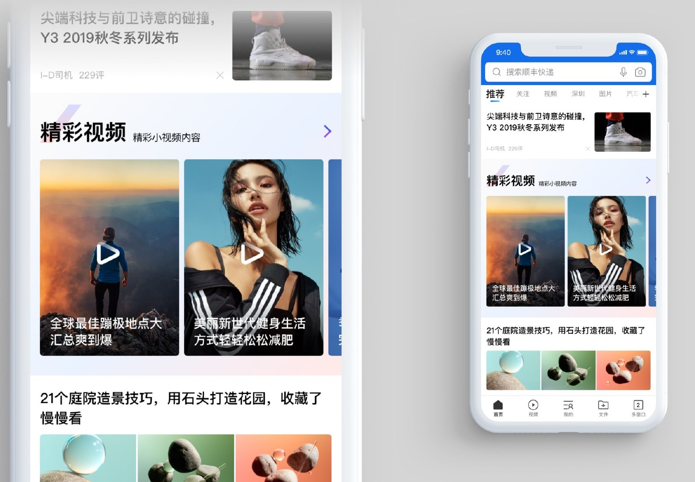
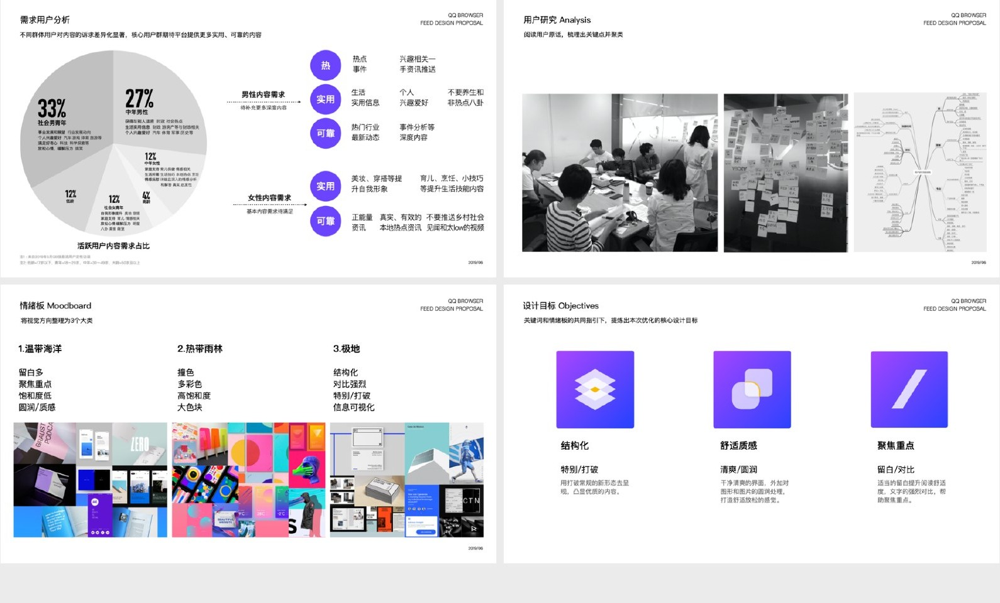
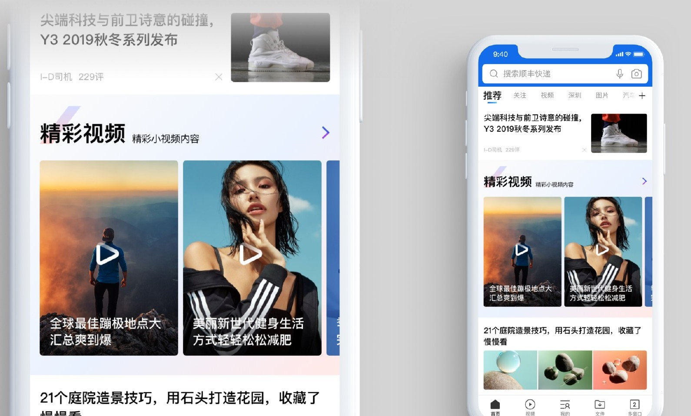
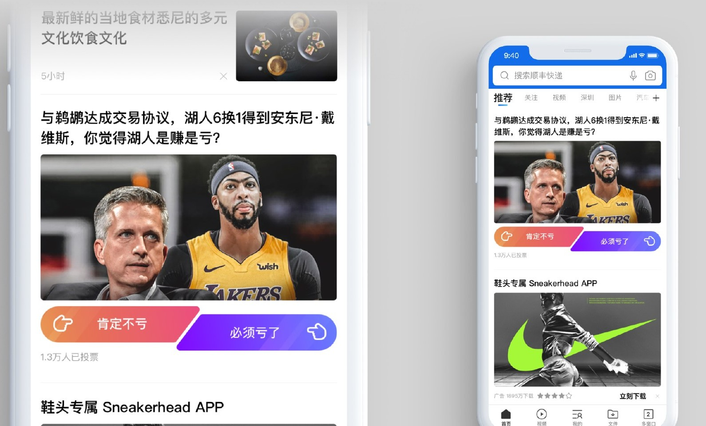
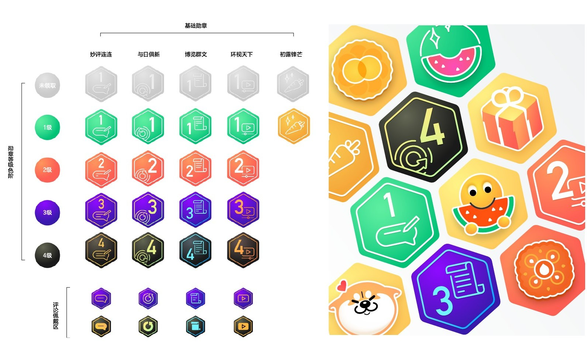

05 / CONTENT EXPERIENCE
QQ 浏览器
让内容更容易被发现
从用户内容需求与视觉方向研究出发，探索信息流中的阅读、视频、互动和运营体验。
- 项目
- QQ 浏览器信息流
- 方向
- 内容体验与视觉设计
- 范围
- 用户研究 / Feed / 运营设计

01
先理解内容需求，再定义视觉方向
作品集记录了需求分析、讨论与访谈整理，并将用户对内容的诉求转化为信息流设计的出发点。
视觉探索对比了不同的色彩、结构与留白方式，最终聚焦结构化、舒适质感和聚焦重点三项设计目标。设计需要同时支持内容丰富度与浏览效率。

02
不同内容，使用不同阅读节奏
视频需要让用户在播放前理解内容，主视觉、标题与播放提示承担不同的信息任务。作品集以视频模块探索图片比例和信息层级。
在连续的信息流里，较大的主内容与并列推荐形成节奏变化，帮助用户区分当前重点与更多选择。

03
让信息结构服务于浏览与参与
阅读、推荐与互动内容共存于同一条信息流。界面通过模块边界、图片和操作区的区分，让不同类型的内容保持可辨认。
互动模块将内容与参与入口放在一起，在阅读过程中提供清楚的下一步。设计探索兼顾浏览的连续性和具体操作的可见性。

04
把运营内容做成一致的视觉系统
运营内容往往主题多、更新快。作品集中的图形探索以统一的几何轮廓、色彩关系与图标方式组织不同主题。
这样的视觉系统让活动保持识别度，同时为不同类别与内容变化保留空间。不同主题沿用共同的图形规则，便于后续扩展与持续运营。
图文依据：LIYOU PORTFOLIO 2024，第 49—58 页。文字依据作品图示整理。
NEXT / 联想 VIBE UI ↗